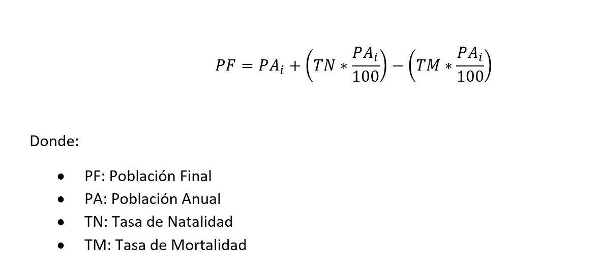

La calculadora de Población Final realiza una estimación de cuál será la cantidad de personas dado un número inicial de ellas, el número de años a los que se desea realizar la estimación y las tasas de natalidad y mortalidad.
Para realizar el cálculo se utilizó una formula recursiva en la que se suma a la poblacion actual la multiplicacion de la poblacion por la tasa de natalidad y se resta la tasa de mortalidad multiplicado por la población
